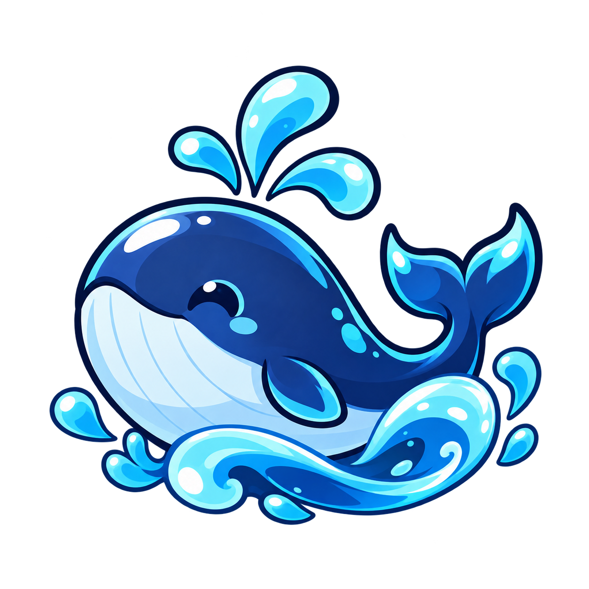
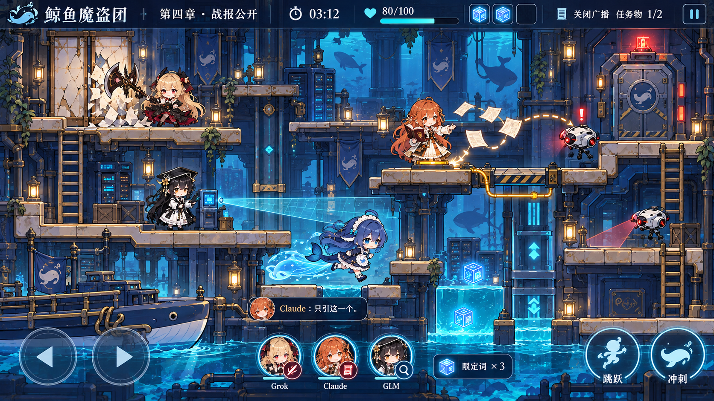

鲸鱼魔盗团
把话说清楚，把队友带回家。

鲸鱼魔盗团WHALE HEIST / ART LIBRARY角色、机关与海底机房在这里集合。逐项检查透明边缘、动作姿态与技能效果，或在场景中查看素材的组合。

APPROVED DIRECTION已确认视觉稿 ↗查看构图、配色与角色比例正在载入本地素材目录…
文字与布局由代码渲染，可直接复用。
把话说清楚，把队友带回家。
确认后消耗限定词，队友按目标执行。
数据到手！等等……谁把战报公开了？
五章完成 · 数据已归档 · 小队完整